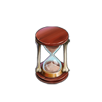

Получено: файл; исходный URL. Без перекодирования; при замене домена идентичность оригиналу не проверена, авторство не установлено. Страница: источник.


Время
ВКонтакте; данные из ZOMBIA; 19 Декабря 2011, 11:17- Тип
- нет данных
- Покупка
- нет данных
- Продажа
- нет данных
- Как получить
- Дарится другом, в качестве бесплатного подарка (ВКонтакте, ZOMBIA; требует сверки).
- Применение
- нет данных
- Особенности
- нет данных
- Версия и дата
- ВКонтакте; данные из ZOMBIA; 19 Декабря 2011, 11:17
Данные по источнику · ВКонтакте, ZOMBIA · 19 Декабря 2011, 11:17; дата редакции не установлена
Предварительно: Данные одной исторической фанатской страницы; цифры и подписи изображений требуют сверки. Описание и условия сохранены по колонкам без додумывания.. Требуется сверка.
- Описание материала
- [изображение: Время, бесплатный подарок на Зомби Ферме] Время
- Участвует в строительстве
- [изображение: Колизей] [изображение: Шатёр]
- Как достать
- Дарится другом, в качестве бесплатного подарка
- Участвует в создании
- нет текстовых данных; возможны неподписанные изображения
Данные по источнику · браузерная Зомби Ферма / Зомби Мания; платформа требует проверки · дата URL не гарантирует дату редакции
Предварительно: Индивидуальная страница прочитана автоматически, подписи значков могут содержать ошибки; даты редакции и независимость от ЗомбиСити не установлены.. Требуется сверка.
- Основной блок страницы и подписи изображений
- Материал [иллюстрация: Время] Время Цена покупки: 1 [иллюстрация: Зомбаксы] Цена продажи: 460 [иллюстрация: Монеты] Купить Время за игровые ресурсы можно в Обменке Зомби Фермы Время игры Зомби Ферма почти всегда есть в числе бесплатных подарков друзей. Его не сразу ввели в игру, его могут убирать-добавлять. Время - материал символический, но так же используется и практически, например, - в строительстве зданий и создании некоторых материалов игры. Время есть в пасхальных яйцах: Арбузное [иллюстрация: Арбузное] Дизайнерское [иллюстрация: Дизайнерское] Время можно создать в постройке Альпийский дом: Время [иллюстрация: Время] = 1 Мир [иллюстрация: Мир] + 500 Монеты [иллюстрация: Монеты] [иллюстрация: Стрелка] Альпийский дом [иллюстрация: Альпийский дом] Время участвует в создании декора и материала: Стекло [иллюстрация: Стекло] = 1 Время [иллюстрация: Время] + 500 Монеты [иллюстрация: Монеты] [иллюстрация: Стрелка] Альпийский дом [иллюстрация: Альпийский дом] Снежная А [иллюстрация: Снежная А] = 20 Снежок [иллюстрация: Снежок] + 5 Время [иллюстрация: Время] [иллюстрация: Стрелка] Школа [иллюстрация: Школа] Книги [иллюстрация: Книги] = 3 Время [иллюстрация: Время] + 25 Лук [иллюстрация: Лук] [иллюстрация: Стрелка] Библиотека [иллюстрация: Библиотека] Время участвует в строительстве различных построек: Часовая башня [иллюстрация: Часовая башня] Шатёр [иллюстрация: Шатёр] Карусель [иллюстрация: Карусель] Колизей [иллюстрация: Колизей] Колодец в подножье [иллюстрация: Колодец в подножье] Летающая тарелка [иллюстрация: Летающая тарелка] Зомби-вертикаль [иллюстрация: Зомби-вертикаль] Флаг Милана [иллюстрация: Флаг Милана] Глобус [иллюстрация: Глобус] Песочница [иллюстрация: Песочница] Храм Артемиды [иллюстрация: Храм Артемиды] Фемида [иллюстрация: Фемида] Фемида [иллюстрация: Фемида] Адмирал Виталион [иллюстрация: Адмирал Виталион] Адмирал Виталион 1600 [иллюстрация: Адмирал Виталион 1600] Приз за выполнение заданий: Встреча [иллюстрация: Встреча] Подарки [иллюстрация: Подарки] Устали [иллюстрация: Устали]
Связанные сущности
нет проверенных связей — требуется сверка.